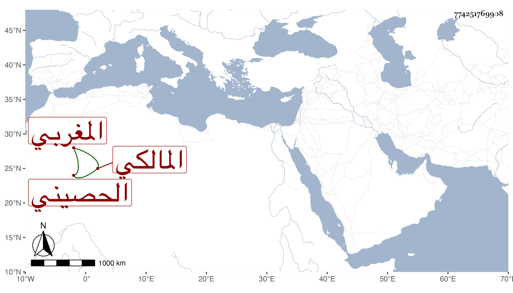

0902Sakhawi.DawLamic.ITO20230111-ara1.EIS1600.774251769908
Biography ID: 774251769908
131
عبد الدائم بن عبد الرحيم بن عبد الله بن علي بن سعد الحصيني المغربي المالكي . قدم في سنة تسع وثمانين ليحج فما تيسر له ولقيني بعدها فأخبرني أنه حفظ القرآن والرسالة وبعض ابن الحاجب واشتغل بالفقه وكذا قليلا بأصوله والعربية والمنطق ، ومن شيوخه يوسف بن أحمد الأندلسي الآتي وعمر والجبالي وأبو الحسين بن محمد الزلديوي وغيرهم ، وسمع مني وعلى أشياء وهو فقير جدا .
